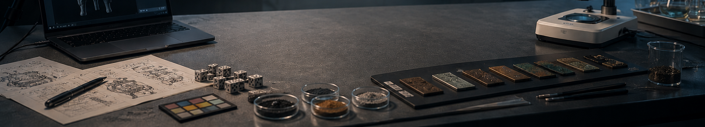

Research Achievements 연구 성과 研究成果 Tadqiqot yutuqlari Résultats de recherche إنجازات البحث Risultati della ricerca Forschungsergebnisse Logros de investigación Ερευνητικά Επιτεύγματα Onderzoeksresultaten Forskningsresultat 研究成果
Discover our significant contributions to conservation science through publications, conferences, patents, and awards. 논문, 컨퍼런스, 특허, 수상 등 보존과학 분야의 중요한 기여를 확인해보세요. 論文・学会発表・特許・受賞など保存科学分野への重要な貢献をご確認ください。 Nashrlar, konferensiyalar, patentlar va mukofotlar orqali konservatsiya fanidagi muhim hissamiz bilan tanishing. Découvrez nos principales contributions à la science de la conservation à travers nos publications, conférences, brevets et distinctions. اكتشف مساهماتنا المهمة في علوم الحفظ من خلال المنشورات والمؤتمرات وبراءات الاختراع والجوائز. Scopri i nostri significativi contributi alla scienza della conservazione attraverso pubblicazioni, conferenze, brevetti e premi. Entdecken Sie unsere bedeutenden Beiträge zur Konservierungswissenschaft durch Publikationen, Konferenzen, Patente und Auszeichnungen. Descubra nuestras importantes contribuciones a la ciencia de la conservación a través de publicaciones, conferencias, patentes y premios. Ανακαλύψτε τις σημαντικές συνεισφορές μας στην επιστήμη συντήρησης μέσω δημοσιεύσεων, συνεδρίων, διπλωμάτων ευρεσιτεχνίας και βραβείων. Ontdek onze belangrijke bijdragen aan de conserveringswetenschap via publicaties, conferenties, patenten en onderscheidingen. Upptäck våra betydande bidrag till konserveringsvetenskap genom publikationer, konferenser, patent och utmärkelser. 探索我们在学术论文、会议交流、专利发明及荣誉奖项方面的重要贡献。